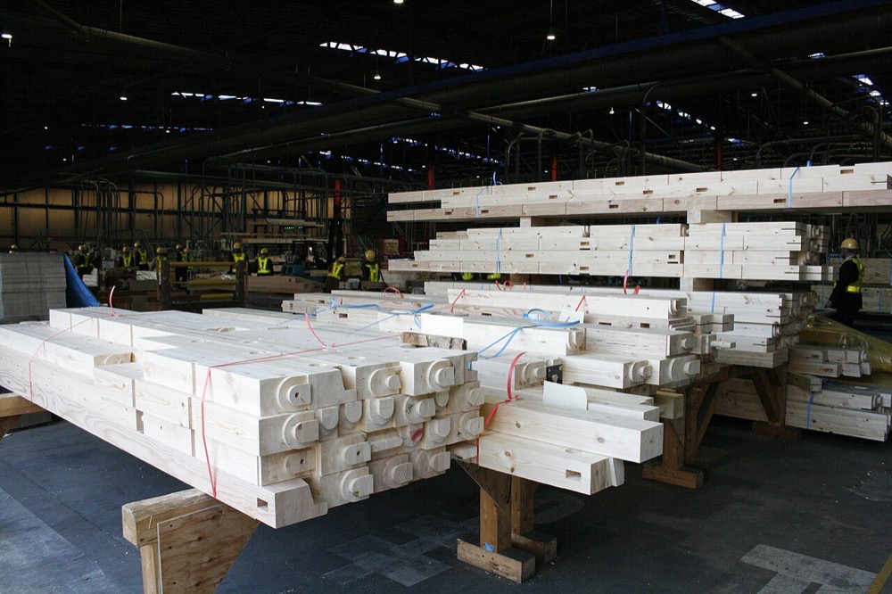

中小の工務店と専門工事会社に、合板・構造材・断熱材などの建設資材を販売する。工務店が電話とFAXで行う複数の卸への発注を1つの画面に集め、在庫を持たずにメーカーと一次卸から現場へ直送する。代金は注文時の振込かカード決済で受け取り、仕入先には月末締めで支払う。
建設資材の流通額を単独で示す全国統計は、本ページでは確認できなかった。経済センサスの中分類「建築材料，鉱物・金属材料等卸売業」は2015年に108兆4,959億円である2。この額は鉄鋼・非鉄金属・石油などを含むため、建設資材の市場規模には使えない。
そこで新築住宅向けに限った推計を置く。2024年度の新設住宅着工は81万戸である1。
推計 新築住宅向けの建材・住宅設備の流通額 ＝ 新設住宅着工戸数 × 1戸当たりの建材・住宅設備の購入額
1戸当たりを800万円と仮定すると、81万戸 × 800万円 ≒ 6.5兆円となる。リフォームと非住宅の建物は含まない。1戸当たりの額は本ページの仮定値である。
米国では大手ホームセンターが建材の専門卸を買収している。Home Depotは2024年6月18日にSRS Distributionの買収を完了し、対価は約180億ドルである6。2025年にはSRSがGMSの買収で合意し、企業価値は約55億ドルと報じられた7。世界の建設資材流通の市場規模は、一次情報で確認できなかった。
| 年 | 変化 | 数値 |
|---|---|---|
| 2022年3月 | 中小企業庁の調査で電材卸の電子受発注を調べた | 電子受発注に対応しない理由は、価格交渉や信頼関係など取引先の事情が4割近くで最多3 |
| 2024年6月 | Home DepotがSRS Distributionの買収を完了した | 対価約180億ドル6 |
| 2024年10〜11月 | 東京商工会議所が中小企業の受発注手段を調べた | 電話・FAXが主な手段の企業は24.6%、EDIは13.6%3 |
| 2025年3月 | 法改正前の駆け込み着工 | 新設住宅着工が前年同月比39.1%増1 |
| 2025年4月 | 改正建築基準法と改正建築物省エネ法が施行された | 新築住宅に省エネ基準への適合が求められ、断熱材と構造材の仕様が変わる1 |
| 2025年9月 | Home Depot傘下のSRSがGMSを連結した | 株式の対価約43億ドルと借入返済約12億ドル5 |
| 2026年9月 | 木材・建材卸向けにFAXと電話の注文を自動で読み取るサービスが始まった | FAXの画像から品番・数量・納期を読み取る4 |
省エネ基準の適合義務で、工務店は断熱材と構造材の仕様を物件ごとに確認する手間が増えた1。一方で受発注の約4分の1は電話とFAXで行われる3。発注の手間を減らす仕組みへの需要は、法改正の後に大きくなる。
| 種類 | 事業者 | 規模 |
|---|---|---|
| 総合建材卸 | JKホールディングス | 2025年3月期の連結売上高3,933億円、うち総合建材卸売事業3,245億円。中核子会社の取引先は約1万先、仕入先は2,000社超1 |
| 総合建材卸 | 商社系と地域の建材卸 | 各社の売上は確認できなかった |
| ホームセンター | プロ向けの売場をもつ各社 | 建材の売上は確認できなかった |
| 受発注の仕組み | FAX・電話注文の読み取りサービス | 卸の受注側の入力を減らす。工務店の発注をまとめる仕組みではない4 |
首位の条件 推計6.5兆円に対し、首位候補のJKホールディングスの卸売売上3,245億円は約5.0%である1。首位に立つには3,245億円を上回る販売が必要である。押さえる点は3つある。①1つの都市圏の工務店の発注を、品目を問わず1つの画面に集めること。②メーカーと一次卸から直送する経路を確保し、在庫を持たずに納期を守ること。③工務店の支払いを注文時に受け取り、仕入先への支払いより先に現金が入る形を維持すること。
首都圏の1つの県に絞り、年間10〜50棟を建てる工務店を対象にする。品目は省エネ基準の適合に関わる断熱材・構造材・合板から始める。

| 用途 | 金額 | 検証すること |
|---|---|---|
| 営業2名と発注担当2名の人件費 12か月 | 2,000万円 | 工務店300社に訪問し、何社が発注を移すか |
| 受発注画面の開発と既存サービスの利用料 | 800万円 | 電話とFAXの注文を何割まで画面に移せるか |
| 仕入先との契約と配送の手配 | 300万円 | 直送で納期を守れる割合 |
| 運転資金 | 500万円 | 注文時の入金と仕入先への支払いの時期の差 |
| 予備 | 400万円 | |
| 合計 | 4,000万円 |
| 月 | 計画 |
|---|---|
| 1〜3月目 | メーカー3社と一次卸2社と直送の契約を結ぶ。工務店の名簿300社を作成する |
| 4〜6月目 | 30社と取引を始める。FAXと電話の注文を受け付けたまま、画面への入力を自社で代行する |
| 7〜9月目 | 取引先を80社に広げる。注文時の入金とカード決済に同意する工務店の割合を測る |
| 10〜12月目 | 月間の売上を8,000万円にする。品目を住宅設備と内装材に広げるか判断する |
1年目の判定基準は、取引先80社のうち6割以上が注文時の支払いに同意し、粗利率8%以上を保つことである。
| 段階 | 資金 | 金融機関 | 条件 |
|---|---|---|---|
| 1年目 | 自己資金、新規開業向け融資 | 日本政策金融公庫 | 受発注画面と人件費に充てる |
| 2〜4年目 | 運転資金、当座貸越 | 地銀、信用保証協会 | 掛けで支払う工務店の割合が増えた分を借りる |
| 3年目以降 | 売掛債権の流動化 | 地銀、ファクタリング会社 | 大口の工務店とゼネコンの売掛金を資金に換える |
| 5年目以降 | 物流拠点の取得資金、地域の建材店の買収資金 | 地銀、メガバンク | 拠点は土地と建物を担保にする。買収は型Cの資金になる |
| 年目 | 1 | 2 | 3 | 5 | 7 | 10 |
|---|---|---|---|---|---|---|
| 取引先 社 | 80 | 300 | 800 | 3,000 | 7,000 | 16,000 |
| 売上高 億円 | 5 | 20 | 55 | 200 | 420 | 800 |
| 営業利益 億円 | -0.3 | 0 | 0.6 | 4 | 10 | 20 |
| 累計投資 億円 | 0.4 | 1 | 2.5 | 8 | 20 | 50 |
| 借入残高 億円 | 0.1 | 1 | 3 | 12 | 35 | 90 |
| 年目 | 1 | 2 | 3 | 5 | 7 | 10 |
|---|---|---|---|---|---|---|
| 取引先 社 | 50 | 120 | 250 | 600 | 1,000 | 1,600 |
| 売上高 億円 | 3 | 8 | 17 | 40 | 60 | 80 |
| 営業利益 億円 | -0.4 | -0.3 | -0.1 | 0.3 | 0.8 | 1.6 |
| 累計投資 億円 | 0.4 | 0.7 | 1.2 | 2.5 | 4 | 7 |
| 借入残高 億円 | 0.1 | 0.5 | 1 | 3 | 6 | 10 |
前提
楽観の10年目は売上高800億円で、目安の1,000億円に届かない。取引先16,000社は、JKホールディングスの中核子会社の取引先約1万先1の1.6倍である。保守では売上高80億円に留まる。
楽観の800億円は、推計6.5兆円の約1.2%であり、JKホールディングスの卸売売上3,245億円1の約4分の1である。新築住宅向けの建材流通で10年以内にシェア1位には届かない。
1つの都市圏に限れば首位の可能性はあるが、都市圏別の建材流通額と各社の地域別売上は公表されておらず、確認できない。工務店向けの建材ECという区分では首位になりうるが、その区分の市場規模が1,000億円以上かは確認できない。
停止する位置は3つある。1つ目は1〜2年目で、工務店が注文時の支払いに応じず、運転資金が不足する場合である。2つ目は3年目前後で、メーカーと一次卸が既存の卸との関係を理由に直送の条件を厳しくする場合である。3つ目は5年目以降で、新設住宅着工の減少が取引先1社当たりの購入額を下げる場合である。
建設資材は重量物で、流通は国内の物流網に依存する。米国では大手ホームセンターが専門卸の買収を進めており56、後発の参入は難しい。
| 順 | 国 | 理由 |
|---|---|---|
| 1 | ベトナム、タイ | 日系の住宅会社と建材メーカーが進出しており、日本の工務店向けの受発注の仕組みを持ち込める。現地の流通構造は確認していない |
グローバルなインフラになる見込みは低い。
| # | 基準 | 判定 | 根拠 |
|---|---|---|---|
| 1 | 50年、魂を燃やし続けられるか | 創業者が判定 | |
| 2 | 10年以内に、国内市場規模1,000億円以上の市場でシェア1位になれるか | × | 楽観の800億円でも首位候補の卸売売上3,245億円の約4分の1に留まる |
| 3 | 4,000万円で始められ、融資で伸ばせるか | ○ | 在庫を持たない直送で始められ、運転資金は地銀と売掛債権の流動化で調達できる |
| 4 | グローバルなインフラになり得るか | × | 建材は重量物で国内の物流網に依存し、米国は大手による統合が進んでいる |
| 5 | 営業力が最初の売上に直接結びつくか | ○ | 工務店への訪問で発注先が移り、その月から売上になる。ただし相手は大企業ではなく中小の工務店である |
| 6 | 同じビジョンを共有する仲間を誘える事業か | 創業者が判定 | |
| 7 | 本業が早く現金を生み、返済と出資の原資になるか | △ | 注文時の入金なら現金が先に入るが、営業利益率は2〜2.5%で、出資に充てる余剰は小さい |
| 8 | 投資先を束ねる群の中核になれるか | ○ | 工務店の発注データを共通の需要にして、建材店・プレカット・配送の会社を束ねられる |
| 9 | 成長の資金源がA・B・Cのどれに当たるか | A | 注文時に代金を受け取り、仕入先に月末締めで支払う形で現金が先に入る |
1. 仕入条件で既存の卸に劣る 新規参入者はメーカーから既存の大手卸より高い価格で仕入れる。粗利率が8%を下回ると事業が成り立たない。対策は品目を絞り、1品目当たりの購入量を早く大きくすることである。大手卸と同じ条件を得るまでの期間の赤字は潰せない。
2. 工務店が掛け払いを求める 建材の取引は月末締めの掛け払いが一般的である。注文時の支払いを求めると取引先が増えない。対策はカード決済の手数料を自社で負担し、掛け払いを選ぶ取引先には与信の上限を設けることである。
3. 新設住宅着工の減少 推計の基礎は新築住宅である。着工が減ると市場そのものが小さくなる。対策はリフォームと非住宅の資材に品目を広げることである。人口減少による着工の減少そのものは潰せない。
4. 大手卸の電子化 大手卸は基幹システムの導入を進めている1。大手卸が工務店向けの発注画面を無料で提供すると、受発注の利便性だけでは差がなくなる。対策は複数の卸とメーカーの商品を1画面で比較できる中立性を維持することである。

.jpg){kind=link}